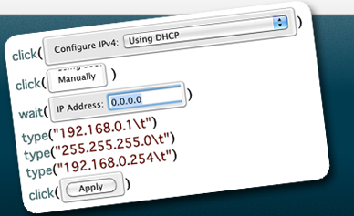

用Sikuli来自动化你的工作

Xingkui@OpenFeint
- 使用屏幕截图来自动化操作和测试用户界面的技术
- 脚本代码及IDE可运行于Mac，Windows和Linux。
- 编写的程序由屏幕截图，sikuli脚本和python代码组成
- 可以操作你的操作系统上看得见的东西，包括桌面应用程序，甚至vnc远程桌面或手机模拟器
- 开源研究型项目，由MIT计算机与人工智能实验室的用户界面设计组成员开发，主创来自台湾
又一个自动化工具?
不是已经有
- Autohotkey
- Applescript, Auotmator
- Selenium
- LoadRunner
- ......
来看Sikuli的Demo吧
来看Sikuli的Demo吧
还是来解决点实际问题吧
每次启动公司的VPN太费事了！！！！！！！！！！！
- 打开NetExtender
- 输入我的vpn密码
- 又要求我输入一个临时密码？？
- 切换到邮件程序，等待临时密码邮件的到来
- 邮件来了！打开邮件，拷贝临时密码出来
- 回到vpn程序那个弹出框，把临时密码粘贴进去，点击OK
-
要不用Applesript,Ruby,Java之类的东西写一下???
我们可以用Sikuli做什么
- 运行程序
- 鼠标单击，双击
- 向文本框输入内容
- 使用全局快捷键
- 判断某些元素是否在界面上
-
更多能力参看Sikuli文档